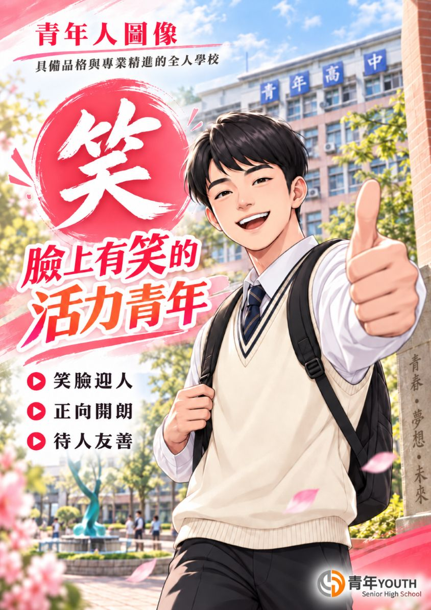
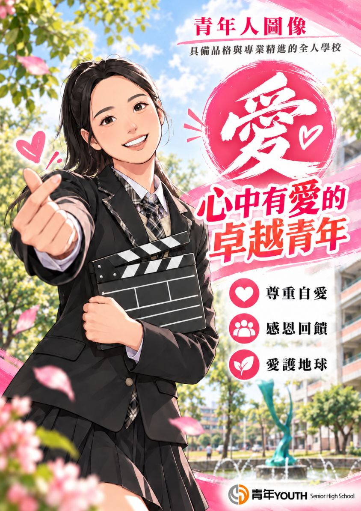
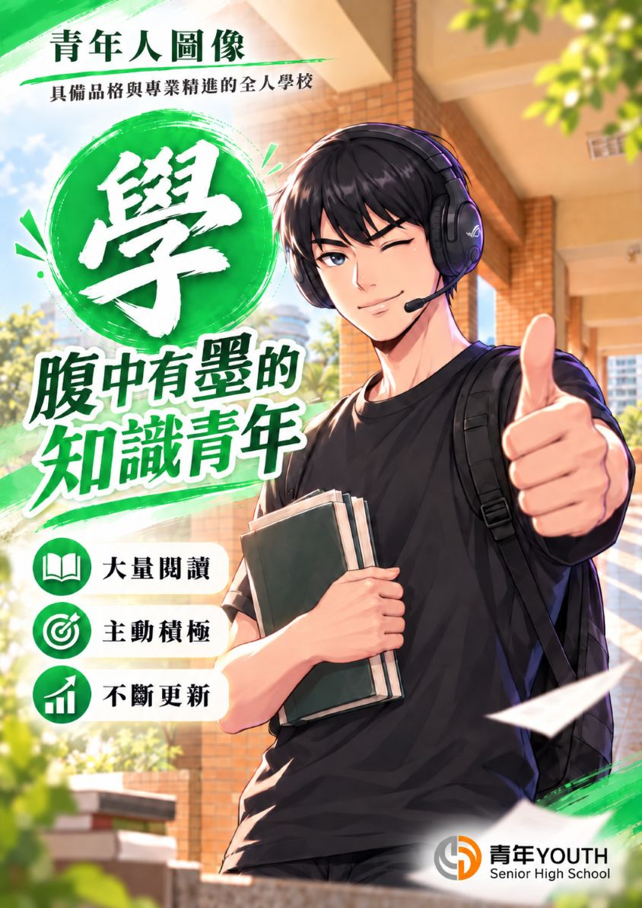
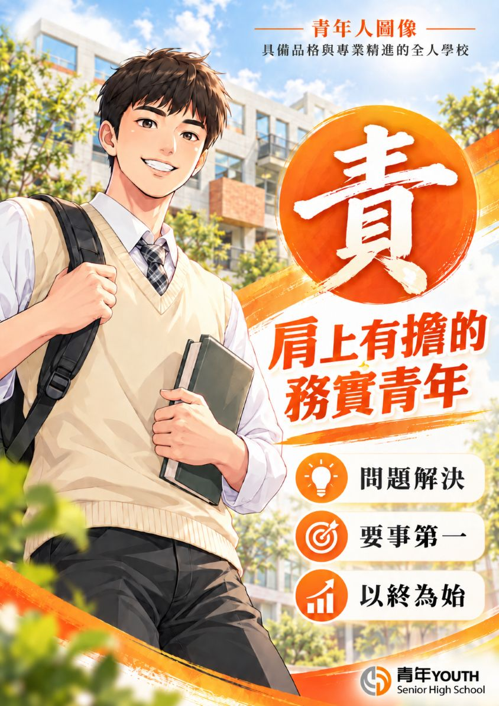
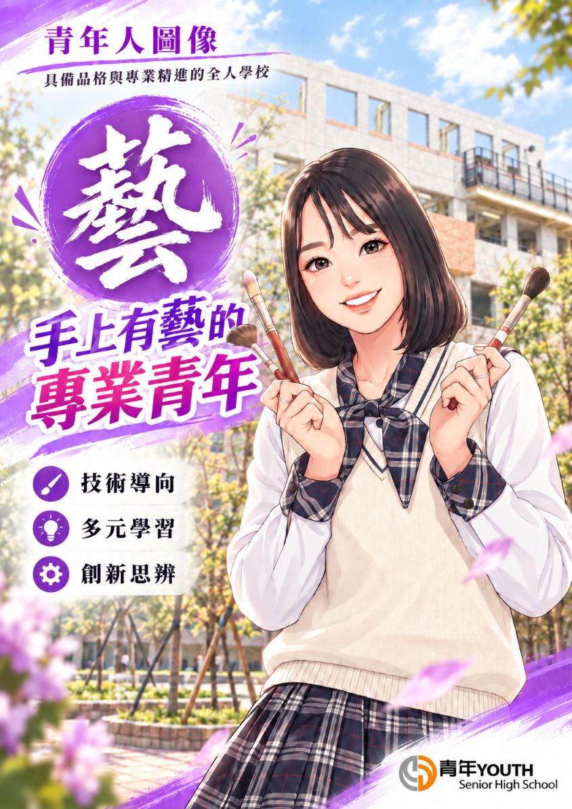

新學期的開始，象徵著一段全新旅程的啟航。感謝您將孩子交付給青年高中，讓我們有幸能與您攜手，陪伴孩子走過這段充滿探索、成長與收穫的青春歲月。
我們深信「學生是教育的主體」，每一項策略與作為，都以孩子的成長與未來為依歸。
臺中市青年高級中學 校長
親愛的家長夥伴您好：平安！喜樂！
新學期的開始，象徵著一段全新旅程的啟航。感謝您將孩子交付給青年高中，讓我們有幸能與您攜手，陪伴孩子走過這段充滿探索、成長與收穫的青春歲月。
近六十年來，青年高中一路走來，始終承蒙家長、師長與歷屆校友的關心與支持。即將邁入一甲子的青中，因為有您們的陪伴，依然充滿蓬勃活力、熱情與希望。
新的一年，我們將持續秉持「青中六有、精緻卓越」的教育理念，結合「三好運動」與「七個好習慣」，致力於將青年高中打造為一所兼具品德教育、專業培育與全人發展的優質校園，為孩子的人生奠定穩固而豐厚的基石。
迎向未來，青年高中持續以「提升孩子競爭力」為三大核心方向：
面對未來的各項評鑑與挑戰，青年高中勇於面對、持續追求成長。教育從來不是單行道，而是一段家校同行的旅程。只要我們「站在一起、想在一起、做在一起」，就能為孩子創造無限可能！
校長 廖能惠 敬上
青年高中以培育品德、專業與全人發展為願景，形塑「目中有人、臉上有笑、心中有愛、腹中有墨、肩上有擔、手上有藝」的六大青年學子核心素養。
懂得尊重他人、看見同儕需要，心懷謙和與同理。

展現熱情自信、樂觀積極面對挑戰，溫暖友善待人。

心存善念、感恩知足，懷抱關懷社會與生命的慈悲心。

博覽群書、厚植學識內涵，具備自主學習與思辨力。

勇於承擔責任、講求誠信，對家庭、學校與社會有擔當。

精進專業技能、落實務實致用，一人一證照行行出狀元。
親愛的海外家長您好！感謝您跨越千里將孩子交付青年高中。學校提供全方位的生活住宿照顧、專業技能培訓與多元文化關懷，陪伴孩子在臺灣安心求學、茁壯成長！
💡 提示：點擊網頁頂部【🌏 語言 / Language】按鈕，可將全站即時翻譯為您的母語（Tiếng Việt / Bahasa Indonesia / English / မြန်မာ / ភាសាខ្មែរ）！
學校宿舍派任男舍、女舍專職輔導老師，全天候照護學生生活起居與常規。校內健康中心提供醫療照護，營養餐廳供應均衡膳食，嚴格門禁管制守護學生安全。
Dedicated dormitory teachers, health clinic care, balanced meals, and 24/7 security for complete peace of mind.實習處國際組量身打造專業技術養成方案，結合現代化工場與企業產學實習，輔導每位僑生取得中華民國國家級技術士證照，為未來在臺升學與就業奠定堅強基礎。
Industry-academia partnership, practical factory training, national skill certifications, and bright future pathways.每年四月盛大辦理「國際文化週」，歡慶傳統新年潑水節、各國美食文化交流與多語交流活動。老師同理關懷思鄉之情，營造如家一般溫馨融洽的學習環境。
Annual International Cultural Week, Songkran Water Festival, traditional foods, and a warm family-like atmosphere.
若您想了解孩子在校學習或生活狀況，歡迎隨時與本校國際組師長聯繫：
• 實習處國際組電話：+886-4-2496-3333 分機 968 或 962
• 24小時校安緊急守護專線：+886-4-2496-2110
• 學校官方通訊：官方 Facebook 粉絲團與 LINE 帳號（請點選頁尾連結隨時留言諮詢）
青年學子適性展能，在升學進路、全國技藝競賽與專業技能檢定中大放異彩！
• 餐飲科 洪御玹 榮獲第56屆全國技能競賽「中餐烹調」全國金牌。
• 餐飲科 連憶萍 榮獲全國技能競賽佳作。
• UAPP WPC 亞盟第8屆世界盃美學廚藝創作競賽，榮獲 7金 5銀 2銅 大滿貫！
• 烘焙食品科：17位同學取得中式麵食加工乙級。
• 水電技術科：9位室內配線乙級、14位數位電子乙級。
• 汽車科：10位機器腳踏車修護乙級、2位汽車修護乙級。
• 水電科康學豐同學 一人勇奪 3張乙級證照！
• 多媒體動畫科榮獲 2024新北電競爭霸戰冠軍（G9: League of Aces）。
• 榮獲 2023 CCCE 城市盃數位科藝電競邀請賽 臺中市第1名、全國殿軍。
• 表演藝術科與音樂科多名學子錄取臺藝大、國立戲曲學院、北藝大及臺體大。
| 科別 | 班級 | 姓名 | 錄取大專校院 | 錄取學系 | 畢業國中 |
|---|
10分鐘掌握：新興毒品辨識 × 法規底線 × 家庭守門。「孩子需要的不是恐嚇，而是有人能及早看見、願意接住！」
保持冷靜，切勿在強烈情緒中辱罵、毒打或逼問，避免孩子抗拒逃家或做出危險行為。
發現可疑煙彈、粉末或不明藥錠，切勿自行試聞、試吸或試吃，使用密封袋封存備查。
主動聯繫學務處生輔組（分機312）、輔導室（分機611-613）或青年韶光計畫心理諮商團隊協助。
若孩子出現意識模糊、嚴重抽搐、肌肉僵直或呼吸微弱等急症，請立即撥打 119 緊急送醫搶救！
包含學分畢業標準、多元升學管道、學習歷程檔案指引、請假規則與校園生活管理規範。
在校成績前列者，經學校推薦甄選進入頂尖科大（如臺科大、北科大、雲科大、高科大）。
全國技能或技藝競賽獲獎者、持乙級技術士證照者，免筆試或採計證照加分優勢錄取優質大學。
參加四技二專統一入學測驗（5月），第一階段採統測成績，第二階段採學習歷程檔案與面試實作。
學習歷程檔案能記錄三年真實學習軌跡，補強一次性筆試無法呈現的實作能力、社團幹部與多元競賽，大幅減輕高三備審資料負擔！
實習處承辦勞動部委託之技能檢定合格考場，推動「一人一證照」。全面更新現代化工場設備、強化工場安全衛生環境，並積極辦理大專院校參訪與業界見習，打造無縫接軌的務實就業與升學實力。
為因應全球化趨勢，本校自109年起開辦「產學攜手合作僑生專班」，於115年組織架構調整為「實習處國際組」。以東南亞國中畢業僑生來臺就學為核心，結合技職特色與企業產學資源，輔導僑生專業技術與適應在臺生活。
學生因故不能到校上課，一律需填寫請假卡，檢附有效證明並完成各級簽核，送學務處生輔組登錄後始可銷假。未按規定完成者一律以曠課論處！
| 請假時數 / 天數 | 簽核簽證流程 | 最終核准權責 | 備註說明 |
|---|---|---|---|
| 4小時以內 | 填寫請假卡 ➔ 附證明 | 導師核准 | 送學務處生輔組銷假 |
| 4小時～1日以內 | 導師簽證 ➔ 科主任 | 科主任核准 | 送學務處生輔組銷假 |
| 1日～3日以內 | 導師、科主任簽證 ➔ 生輔組長 | 生活輔導組長核准 | 送學務處生輔組銷假 |
| 3日～1週以內 | 導師、科主任、生輔組長簽證 ➔ 學務主任 | 學務主任核准 | 送學務處生輔組銷假 |
| 1週以上（含） | 導師、科主任、生輔組長、學務主任簽核 | 校長親自核准 | 重大事故專案陳核 |
「願閱讀成為您起飛的翅膀，帶您飛向所有嚮往的美好！」圖書館每月上架新書約50冊，並全力支援學生自主學習與小論文寫作競賽。
| 活動日程 | 活動項目 | 詳細內容與效益 |
|---|---|---|
| 全學年 | 班級讀書會 | 高一高二每學期各1次，深化班級共讀風氣與表達力。 |
| 8月、9月 | 新生圖書館利用教育 | 新生各班參訪圖書館、熟悉借閱系統與自主學習資源。 |
| 9/1~10/10 及 2/1~3/10 | 中學生網站閱讀心得比賽 | 全國性投稿比賽，獲獎可直接作為學習歷程優良證明！ |
| 9/1~10/15 及 2/1~3/15 | 全國中學生小論文寫作比賽 | 培養學術探究與專案實作能力，升學甄試大利器。 |
| 10/22、5/14 | 影城夜未眠 | 透過精選優質電影賞析，引導議題思辨與深度探討。 |
| 11/30、12/1 | 藝文機構移地參訪 | 參訪臺中軟體園區公益團體「銀網 / 拾本書堂」及大里市立圖書館。 |
| 4/20～4/24 | 國際文化週 | 東南亞美食文化體驗、潑水節慶典交流、邀請優秀畢業校友座談。 |
| 4/23 世界閱讀日 | 名家專題講座 | 邀請專業人士演講「寶島少年 by 曾博綸 & 林品宗」。 |
| 每學期各2次 | 漂書站與借書達人 | 設置校園樓層漂書車；期末頒發教職員前3名、學生組前10名獎金與獎狀。 |
組長：許智皓（分機 516）
• 交通車服務：多條行車路線服務各區學子，詳細路線站點與時刻表可洽總務處查詢。
• 線上報修：校園教室水電硬體設備全面導入線上報修通報系統，加速修繕效率。
組長：張麗冠（分機 515）
• 辦理學期學雜費代收、各項就學優待查調、原住民與弱勢助學金發放。
• 各項代辦費收繳與轉學生各項清冊結算退費作業。
組長：江幸真（分機 512）/ 王翠宏（分機 513）
• 學生制服發放與教科書配發作業。
• 營養午餐異動、冷氣卡儲值、學生大型包裹郵件收發服務。
• 各項教學設備與集會活動場地借用。
從 SEL 看見高中生的情緒與成長，落實兒童權利公約（CRC），讓孩子的聲音被聽見、被認真對待。
SEL 不是要求孩子永遠正向樂觀，而是幫助孩子在面對課業壓力、同儕人際與未來抉擇時，能辨識自我需求，做出成熟且合宜的選擇。
家長的陪伴可以從「理解」開始，先放下「立刻解決」的焦慮，點擊展開查看具體應對建議：
引導策略：
引導策略：
引導策略：
引導策略：
提供座談會手冊全文、學務處反毒宣導與教務處學習歷程簡報之官方 PDF 檔案，支援線上即時閱讀、列印與離線存檔。
完整收錄校長致詞、辦學理念、升學金榜、技能檢定成果、請假規則、生活常規、總務圖書館及輔導室心靈補給站全部內容。
10分鐘掌握新興毒品（依托咪酯「喪屍煙彈」）防制警示、四級毒品法規責任、家長守門四個改變、拒毒四不一要與家庭約定。
詳細解說各學制畢業條件標準（技高/綜高/實用技能）、高中職多元升學管道、學習歷程檔案四大項目、上傳與勾選期限規範。
學校代表號：04-2496-3333｜總機：518｜傳真：04-2493-4833